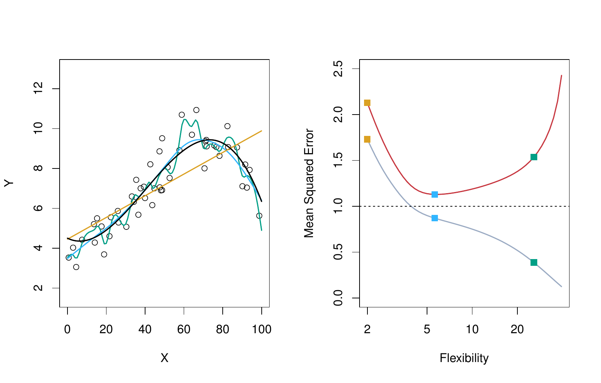
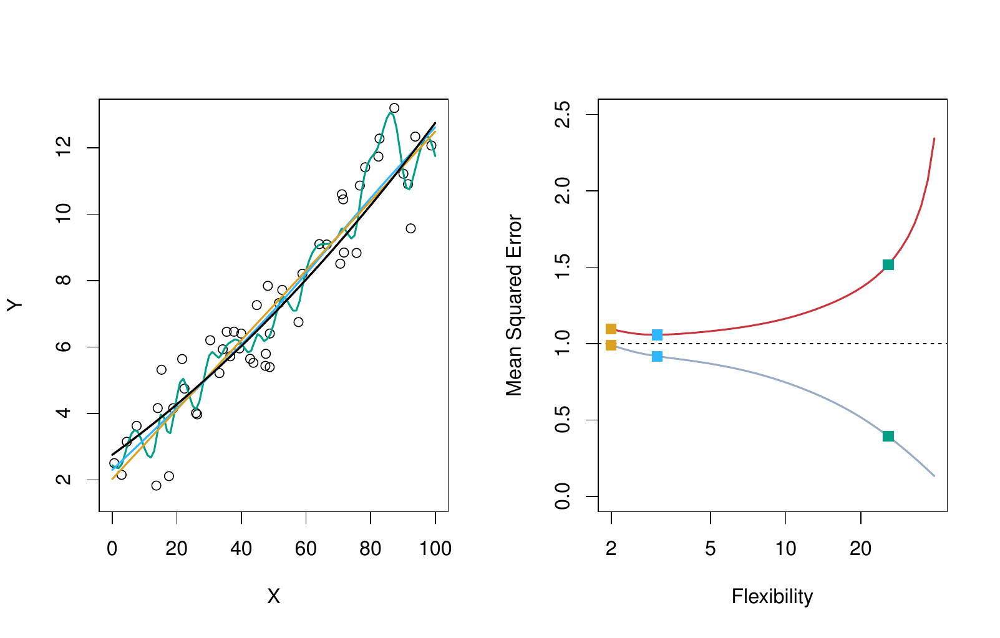
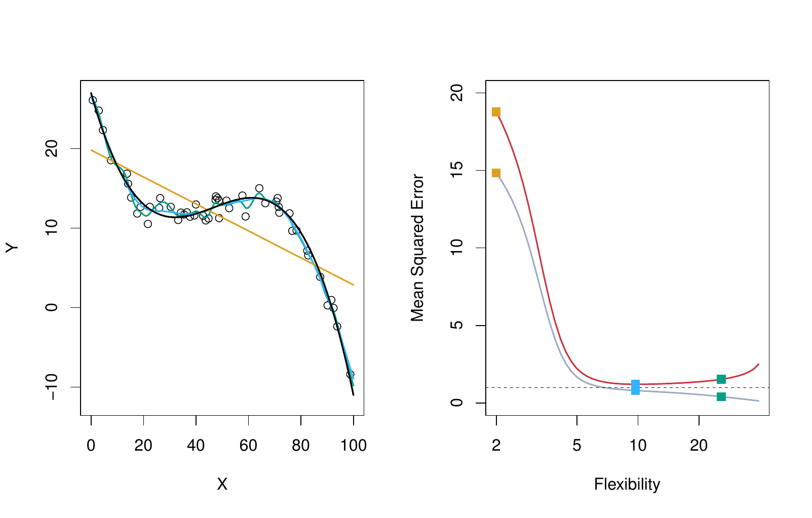
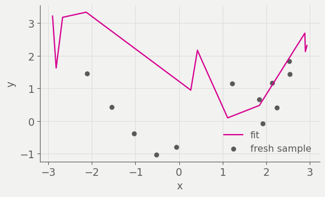

Divide by \(n\) to turn the total into an average.
Training MSE and test MSE
Training MSE
Computed on the observations used to fit the model.
Test MSE
Computed on observations the model has never seen.
Which is smaller, and why?
Training MSE is usually smaller
Most methods choose their parameters to minimize training MSE, so we expect training MSE to fall below test MSE.
What does a small training MSE tell us?
Flexibility and training MSE
Training MSE always decreases as flexibility increases.
Test MSE does not (necessarily)
Degrees of freedom
A single number summarizing how flexible a fitted curve is. A smoother, more restricted curve has fewer degrees of freedom than a wiggly one.
Linear regression with one predictor: 2 degrees of freedom, the most restrictive
A very wiggly spline: many more
Training and test MSE
Non-linear f

ISLP Figure 2.9. Left: true \(f\) in black with three fits. Right: training MSE in grey, test MSE in red, and \(\text{Var}(\varepsilon)\) as the dashed line.
Overfitting
Left of the minimum, the model is too rigid to capture \(f\)
Right of the minimum, the model is fitting \(\varepsilon\)
The dashed floor is \(\text{Var}(\varepsilon)\)
Overfitting: a less flexible model would have had smaller test MSE.
Near-linear f

ISLP Figure 2.10. The same setup with a true \(f\) that is close to linear.
Highly non-linear f

ISLP Figure 2.11. The same setup with a true \(f\) that is far from linear.
f is the true, otherwise-unknown regression function: np.sin(2 * x) + 0.3 * x**2, combining a sine wave with a quadratic term.
2
rng.uniform(-3, 3, 200) draws 200 values from a uniform distribution on
the interval [-3, 3], assigned to x.
3
y evaluates f(x) and adds rng.normal(0, 0.6, 200), 200 draws of
mean zero Gaussian noise with standard deviation 0.6: \(Y = f(X) +
\varepsilon\) in code.
Interpolating the training data
The curve touches every training point. What is the training MSE?
A fresh sample

Let’s generate another set of 10 points from the same distribution. I’ll plot my same prediction (\(\hat{f}(X)\)) with the new data. My original \(\hat{f}\) was overfitting to noise, not \(f\).
Train/test split
from sklearn.model_selection import train_test_splitx_train, x_test, y_train, y_test = train_test_split( x, y, test_size=0.5, random_state=363)x_train.shape, x_test.shape
1
train_test_split is scikit-learn’s function for randomly partitioning
arrays into training and test subsets.
2
Called on x and y. test_size=0.5 holds out half of the 200
observations for testing, and random_state=363 fixes the shuffle so the split is identical every time the deck renders. The four returned arrays are unpacked into x_train, x_test, y_train, y_test.
SplineTransformer builds a B-spline basis expansion of a predictor,
the tool used here for a flexible, well-conditioned curve.
2
dfs = range(4, 51, 4) is the sequence of degrees of freedom to sweep:
4, 8, 12, …, 48, from rigid to wiggly.
3
make_pipeline chains two steps. SplineTransformer(degree=3, n_knots=df - 2) builds a cubic (degree=3) spline basis with df - 2 interior knots, giving the basis df total degrees of freedom. LinearRegression() then fits ordinary least squares on that basis.
4
model.fit(x_train.reshape(-1, 1), y_train) fits the pipeline on the
training data only; .reshape(-1, 1) turns the 1-D array x_train into the 2-D shape scikit-learn expects.
5
mean_squared_error(y_train, model.predict(...)) computes the training
MSE at this df and appends it to train_mse; the same pattern on the next line (not separately annotated) computes the test MSE into test_mse.